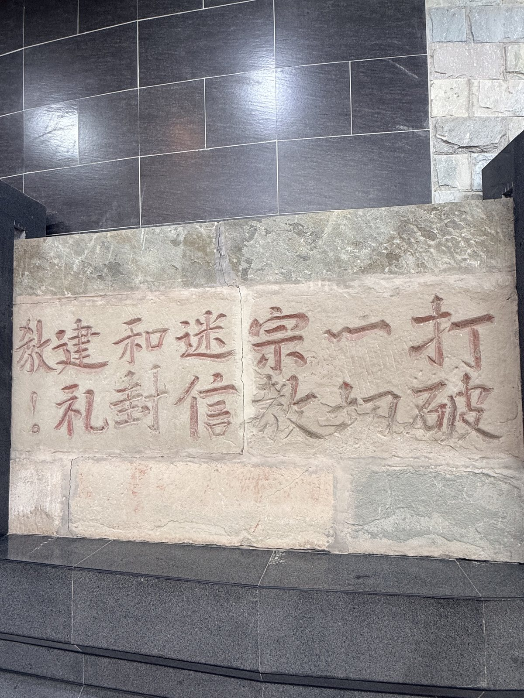
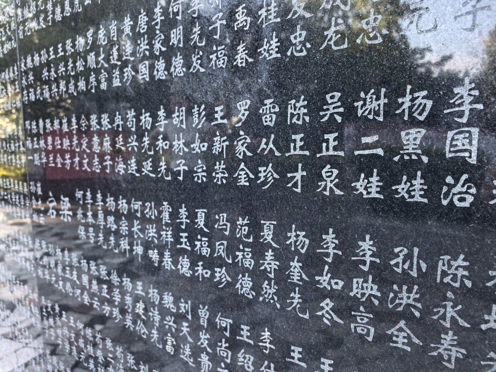
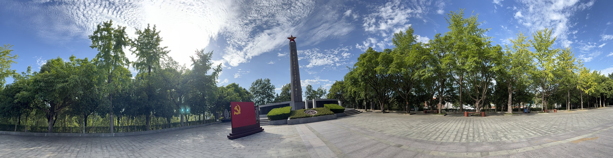

石

以石为纸
纸会脆，墨会淡。石头耐得住风雨，也耐得住一代代人的摩挲——于是名字被交给凿子。
碑林，是把散落在档案、家书与记忆里的名字，收拢到同一片山坡上的尝试。
一九九〇年代起，一座以红军将士为对象的碑林在山间生长。它不设一堂一殿，而是以露天的碑、墙、廊、像，把纪念摊开在行走的路径上。
碑上不只是姓名，还有籍贯、生卒、任职，和一张线刻的面孔。它既是一座纪念建筑，也是一部可以走进去读的名录。
碑林的五种构件 →理解这座碑林，可以从三个字开始。

纸会脆，墨会淡。石头耐得住风雨，也耐得住一代代人的摩挲——于是名字被交给凿子。

十四万个名字按籍贯排列，绕碑一周。没有传记，只有姓名，却比任何颂词都具体。

十七处展区依山就势，碑随坡走，人随碑行。纪念不再是一个厅，而是一条路。
从战场到碑林，中间隔着六十年的沉默与一场漫长的寻访。
一支红军主力转战数千里进入山区，根据地由此建立，鼎盛时人口约六百万。
部队撤离苏区开始长征。十二万参军儿女中，四万八千人牺牲，许多人没有留下完整姓名。
省政府批准建立“将帅碑林”。建设之初“四没有”：没有专人、没有专款、没有办公室、没有电话。
占地一百二十余亩的碑林在山顶落成，同年被命名为全国爱国主义教育示范基地。
他们身虽死，魂犹在。大山的人民会永远纪念他们。将帅碑林纪念馆副馆长